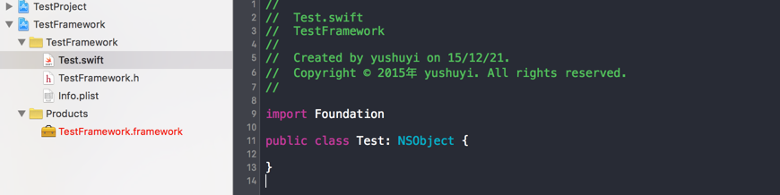

<!DOCTYPE html>
<html>
<head>
  <meta charset="utf-8">
  
  <meta http-equiv="X-UA-Compatible" content="IE=edge" >
  <title>在工作空间（Workspace）环境下使用动态库 | 余书懿的技术博客</title>
  <meta name="viewport" content="width=device-width, initial-scale=1, maximum-scale=1">
  <meta name="description" content="什么是动态库（Dynamic framework）？什么是动态库相信已经不再陌生，在iOS8以后，我们的选择不再只有静态库。本文主要介绍如何在Xcode Workspace中使用动态库！
创建动态库，如下图所示：

创建好以后即可开始创建或导入相应的类文件，我在Framework里面添加了 Test.swift。如下图：

类文件部署完成以后应该对Framework单独编译一次，确保库自身没有错误">
<meta property="og:type" content="article">
<meta property="og:title" content="在工作空间（Workspace）环境下使用动态库">
<meta property="og:url" content="http://yoursite.com/framework-in-workspace/index.html">
<meta property="og:site_name" content="余书懿的技术博客">
<meta property="og:description" content="什么是动态库（Dynamic framework）？什么是动态库相信已经不再陌生，在iOS8以后，我们的选择不再只有静态库。本文主要介绍如何在Xcode Workspace中使用动态库！
创建动态库，如下图所示：

创建好以后即可开始创建或导入相应的类文件，我在Framework里面添加了 Test.swift。如下图：

类文件部署完成以后应该对Framework单独编译一次，确保库自身没有错误">
<meta property="og:image" content="http://yoursite.com/../images/02/01.png">
<meta property="og:image" content="http://yoursite.com/../images/02/02.png">
<meta property="og:image" content="http://yoursite.com/../images/02/03.png">
<meta property="og:image" content="http://yoursite.com/../images/02/04.png">
<meta property="og:image" content="http://yoursite.com/../images/02/05.png">
<meta property="og:image" content="http://yoursite.com/../images/02/06.png">
<meta property="og:image" content="http://yoursite.com/../images/02/07.png">
<meta property="og:image" content="http://yoursite.com/../images/02/08.png">
<meta property="og:image" content="http://yoursite.com/../images/02/09.png">
<meta property="og:image" content="http://yoursite.com/../images/02/10.png">
<meta property="og:image" content="http://yoursite.com/../images/02/11.png">
<meta property="og:image" content="http://yoursite.com/../images/02/12.png">
<meta property="og:updated_time" content="2016-07-01T17:20:23.000Z">
<meta name="twitter:card" content="summary">
<meta name="twitter:title" content="在工作空间（Workspace）环境下使用动态库">
<meta name="twitter:description" content="什么是动态库（Dynamic framework）？什么是动态库相信已经不再陌生，在iOS8以后，我们的选择不再只有静态库。本文主要介绍如何在Xcode Workspace中使用动态库！
创建动态库，如下图所示：

创建好以后即可开始创建或导入相应的类文件，我在Framework里面添加了 Test.swift。如下图：

类文件部署完成以后应该对Framework单独编译一次，确保库自身没有错误">
<meta name="twitter:image" content="http://yoursite.com/../images/02/01.png">
  
    <link rel="alternative" href="/atom.xml" title="余书懿的技术博客" type="application/atom+xml">
  
  
    <link rel="icon" href="/favicon.png">
  
  <link rel="stylesheet" href="/css/style.css">
  
<script>
var _hmt = _hmt || [];
(function() {
  var hm = document.createElement("script");
  hm.src = "//hm.baidu.com/hm.js?cf8ba8049e9ffebd7f8b45ebca2f0ea7";
  var s = document.getElementsByTagName("script")[0]; 
  s.parentNode.insertBefore(hm, s);
})();
</script>

</head>

<body>
  <div id="container">
    <div class="left-col">
    <div class="overlay"></div>
<div class="intrude-less">
	<header id="header" class="inner">
		<a href="/" class="profilepic">
			
			
			
		</a>

		<hgroup>
		  <h1 class="header-author"><a href="/">余书懿</a></h1>
		</hgroup>

		
		<p class="header-subtitle">iOS开发者！Blog主要用于记录和总结技术相关的知识！</p>
		

		
			<div class="switch-btn">
				<div class="icon">
					<div class="icon-ctn">
						<div class="icon-wrap icon-house" data-idx="0">
							<div class="birdhouse"></div>
							<div class="birdhouse_holes"></div>
						</div>
						<div class="icon-wrap icon-ribbon hide" data-idx="1">
							<div class="ribbon"></div>
						</div>
						
						<div class="icon-wrap icon-link hide" data-idx="2">
							<div class="loopback_l"></div>
							<div class="loopback_r"></div>
						</div>
						
						
						<div class="icon-wrap icon-me hide" data-idx="3">
							<div class="user"></div>
							<div class="shoulder"></div>
						</div>
						
					</div>
					
				</div>
				<div class="tips-box hide">
					<div class="tips-arrow"></div>
					<ul class="tips-inner">
						<li>Menu</li>
						<li>Tags</li>
						
						<li>Links</li>
						
						
						<li>About</li>
						
					</ul>
				</div>
			</div>
		

		<div class="switch-area">
			<div class="switch-wrap">
				<section class="switch-part switch-part1">
					<nav class="header-menu">
						<ul>
						
							<li><a href="/">主页</a></li>
				        
							<li><a href="/archives">所有文章</a></li>
				        
						</ul>
					</nav>
					<nav class="header-nav">
						<div class="social">
							
								<a class="github" target="_blank" href="https://github.com/yushuyi" title="github">github</a>
					        
								<a class="weibo" target="_blank" href="http://weibo.com/ysy441088327" title="weibo">weibo</a>
					        
								<a class="rss" target="_blank" href="#" title="rss">rss</a>
					        
								<a class="zhihu" target="_blank" href="https://www.zhihu.com/people/yu-shu-yi-26" title="zhihu">zhihu</a>
					        
						</div>
					</nav>
				</section>
				
				
				<section class="switch-part switch-part2">
					<div class="widget tagcloud" id="js-tagcloud">
						
					</div>
				</section>
				
				
				
				<section class="switch-part switch-part3">
					<div id="js-friends">
					
			          <a target="_blank" class="main-nav-link switch-friends-link" href="http://localhost:4000/">奥巴马的博客</a>
			        
			          <a target="_blank" class="main-nav-link switch-friends-link" href="http://localhost:4000/">卡卡的美丽传说</a>
			        
			          <a target="_blank" class="main-nav-link switch-friends-link" href="http://localhost:4000/">本泽马的博客</a>
			        
			          <a target="_blank" class="main-nav-link switch-friends-link" href="http://localhost:4000/">吉格斯的博客</a>
			        
			          <a target="_blank" class="main-nav-link switch-friends-link" href="http://localhost:4000/">习大大大不同</a>
			        
			          <a target="_blank" class="main-nav-link switch-friends-link" href="http://localhost:4000/">托蒂的博客</a>
			        
			        </div>
				</section>
				

				
				
				<section class="switch-part switch-part4">
				
					<div id="js-aboutme">我是余书懿，来自江西，目前在珠海工作和生活，就职于金山办公软件，负责iOS相关的开发工作，喜欢尝试新的技术和方案，是个严重的工具控！</div>
				</section>
				
			</div>
		</div>
	</header>				
</div>

    </div>
    <div class="mid-col">
      <nav id="mobile-nav">
  	<div class="overlay">
  		<div class="slider-trigger"></div>
  		<h1 class="header-author js-mobile-header hide">余书懿</h1>
  	</div>
	<div class="intrude-less">
		<header id="header" class="inner">
			<div class="profilepic">
			
				
			
			</div>
			<hgroup>
			  <h1 class="header-author">余书懿</h1>
			</hgroup>
			
			<p class="header-subtitle">iOS开发者！Blog主要用于记录和总结技术相关的知识！</p>
			
			<nav class="header-menu">
				<ul>
				
					<li><a href="/">主页</a></li>
		        
					<li><a href="/archives">所有文章</a></li>
		        
		        <div class="clearfix"></div>
				</ul>
			</nav>
			<nav class="header-nav">
				<div class="social">
					
						<a class="github" target="_blank" href="https://github.com/yushuyi" title="github">github</a>
			        
						<a class="weibo" target="_blank" href="http://weibo.com/ysy441088327" title="weibo">weibo</a>
			        
						<a class="rss" target="_blank" href="#" title="rss">rss</a>
			        
						<a class="zhihu" target="_blank" href="https://www.zhihu.com/people/yu-shu-yi-26" title="zhihu">zhihu</a>
			        
				</div>
			</nav>
		</header>				
	</div>
</nav>

      <div class="body-wrap"><article id="post-framework-in-workspace" class="article article-type-post" itemscope itemprop="blogPost">
  
    <div class="article-meta">
      <a href="/framework-in-workspace/" class="article-date">
  	<time datetime="2016-03-07T02:29:45.000Z" itemprop="datePublished">2016-03-07</time>
</a>
    </div>
  
  <div class="article-inner">
    
      <input type="hidden" class="isFancy" />
    
    
      <header class="article-header">
        
  
    <h1 class="article-title" itemprop="name">
      在工作空间（Workspace）环境下使用动态库
    </h1>
  

      </header>
      
      <div class="article-info article-info-post">
        
        

        <div class="clearfix"></div>
      </div>
      
    
    <div class="article-entry" itemprop="articleBody">
      
        <h3 id="什么是动态库（Dynamic-framework）？"><a href="#什么是动态库（Dynamic-framework）？" class="headerlink" title="什么是动态库（Dynamic framework）？"></a>什么是动态库（Dynamic framework）？</h3><p>什么是<code>动态库</code>相信已经不再陌生，在iOS8以后，我们的选择不再只有静态库。本文主要介绍如何在<code>Xcode Workspace</code>中使用动态库！</p>
<p>创建动态库，如下图所示：</p>
<p></p>
<p>创建好以后即可开始创建或导入相应的类文件，我在<code>Framework</code>里面添加了 <code>Test.swift</code>。如下图：</p>
<p></p>
<p>类文件部署完成以后应该对<code>Framework</code>单独编译一次，确保库自身没有错误。<br>接着，在需要使用这个<code>Framework</code>的<code>Project</code>中引入这个<code>Framework</code>，<br>如下图：</p>
<p></p>
<p>继续，我在<code>Project</code>里面<strong>使用</strong>这个<code>Framework</code>。如果是<code>Swift</code>的代码应该按如下方式引入这个<code>Framework</code>：</p>
<p></p>
<p>最后终于到了使用<code>Framework</code>里面某个类的代码了。</p>
<p>接下来分别介绍引入<code>Swift</code>类文件和<code>Objective-C</code>类型需要注意的细节。<br>首先是<code>Swift</code><br>1：确保你要调用的类，属性，方法声明了 <code>public</code> 前缀，如下图：<br>接着是<code>Objective-C</code><br>1：将对外的头文件设位置到<code>Public</code>区域</p>
<p></p>
<p>2：接着，在<code>TestFramework.h</code>文件中引入刚刚公共的类库</p>
<p></p>
<p>按照以上设置一路过来，模拟器的编译和运行应该跑通了，但在编译真机的时候可能会出现启动崩溃，提示如下图：</p>
<p></p>
<p>Google了一下，找到如下<a href="http://stackoverflow.com/questions/24211549/dyld-library-not-loaded-rpath-mydsk-framework-mydsk-swift-ios-8-0" target="_blank" rel="external">解决方案</a></p>
<p>通过<code>Embedded Binaries</code> 嵌入已经完成编译的<code>Framework</code>，如下图：</p>
<p></p>
<p></p>
<p>再次尝试运行编译到真机，顺利运行！</p>
<h3 id="可能遇到的问题"><a href="#可能遇到的问题" class="headerlink" title="可能遇到的问题"></a>可能遇到的问题</h3><p>到这里似乎所有问题都已经解决了，但是后来用着用着，模拟器的编译和运行又出了些问题。</p>
<p>#####问题一：</p>
<p></p>
<p>于是去指定路径下看了看<code>Framework</code>到底存不存在。发现确实不存在，这个问题似乎也好解决，不存在我就编译一次，让它存在即可。<br>在真机模式下编译一次主工程以后，再回到模拟器模式下编译，通过！</p>
<p>#####问题二：<br>通过<code>Xcode</code>运行到模拟器上，程序顺利启动并处于调试状态，但如果程序单独通过 点击模拟器上面的图标启动 则直接闪退。仔细想想原因以及为什么，这似乎和我解决真机编译运行崩溃有关，也就是我通过<code>Embedded Binaries</code>嵌入库以后出现的这个问题。所以我们再重新审视一下<code>Embedded Binaries</code>的嵌入情况：</p>
<p></p>
<p></p>
<p>发现红框中描述了一个绝对路径,并且前往project.pbxproj查看时，里面也确实描述了一个绝对路径，指向Debug-iphoneos。但是我现在模拟器环境不应该把真机的Framework嵌入到模拟器的App包中，问题应该就出在这里。<br>我们尝试着对project.pbxproj里面写死的path修改一下：<br><figure class="highlight plain"><table><tr><td class="gutter"><pre><span class="line">1</span><br></pre></td><td class="code"><pre><span class="line">$&#123;TARGET_BUILD_DIR&#125;/TestFramework.framework</span><br></pre></td></tr></table></figure></p>
<p>再次再模拟器环境下编译运行，通过！<br>接着脱离Xcode，直接在模拟器中点击打开App，运行成功！</p>
<p>到此，在工作空间（Workspace）环境下使用动态库已经介绍完了，途中遇到的坑不算少。</p>
<h3 id="后记："><a href="#后记：" class="headerlink" title="后记："></a>后记：</h3><p>在<code>Archive</code>时，由于你的<code>Project</code>创建的比较早，在编译完成时可能会遇到类似如下图的警告：</p>
<pre><code>warning: skipping copy phase strip, binary is code signed: 
</code></pre><p>Google了一下，找到如下<a href="http://stackoverflow.com/questions/25949108/warning-during-archive-app-with-ios-8-extension-in-xcode-6" target="_blank" rel="external">解决方案</a></p>

      
    </div>
    
  </div>
  
    
<nav id="article-nav">
  
    <a href="/use-R-swift/" id="article-nav-newer" class="article-nav-link-wrap">
      <strong class="article-nav-caption"><</strong>
      <div class="article-nav-title">
        
          通过 R.swift 以安全的方式获取和调用资源
        
      </div>
    </a>
  
  
    <a href="/hexo-github-guide/" id="article-nav-older" class="article-nav-link-wrap">
      <div class="article-nav-title">基于Hexo+Github搭建个人博客</div>
      <strong class="article-nav-caption">></strong>
    </a>
  
</nav>

  
</article>


<div class="share_jia">
	<!-- JiaThis Button BEGIN -->
	<div class="jiathis_style">
		<span class="jiathis_txt">Share to: &nbsp; </span>
		<a class="jiathis_button_facebook"></a> 
    <a class="jiathis_button_twitter"></a>
    <a class="jiathis_button_plus"></a> 
    <a class="jiathis_button_tsina"></a>
		<a class="jiathis_button_cqq"></a>
		<a class="jiathis_button_douban"></a>
		<a class="jiathis_button_weixin"></a>
		<a class="jiathis_button_tumblr"></a>
    <a href="http://www.jiathis.com/share" class="jiathis jiathis_txt jtico jtico_jiathis" target="_blank"></a>
	</div>
	<script type="text/javascript" src="http://v3.jiathis.com/code/jia.js?uid=1405949716054953" charset="utf-8"></script>
	<!-- JiaThis Button END -->
</div>


<div class="duoshuo">
	<!-- 多说评论框 start -->
	<div class="ds-thread" data-thread-key="framework-in-workspace" data-title="在工作空间（Workspace）环境下使用动态库" data-url="http://yoursite.com/framework-in-workspace/"></div>
	<!-- 多说评论框 end -->
	<!-- 多说公共JS代码 start (一个网页只需插入一次) -->
	<script type="text/javascript">
	var duoshuoQuery = {short_name:"true"};
	(function() {
		var ds = document.createElement('script');
		ds.type = 'text/javascript';ds.async = true;
		ds.src = (document.location.protocol == 'https:' ? 'https:' : 'http:') + '//static.duoshuo.com/embed.js';
		ds.charset = 'UTF-8';
		(document.getElementsByTagName('head')[0] 
		 || document.getElementsByTagName('body')[0]).appendChild(ds);
	})();
	</script>
	<!-- 多说公共JS代码 end -->
</div>


</div>
      <footer id="footer">
  <div class="outer">
    <div id="footer-info">
    	<div class="footer-left">
    		&copy; 2016 余书懿
    	</div>
      	<div class="footer-right">
      		<a href="http://hexo.io/" target="_blank">Hexo</a>  Theme <a href="https://github.com/litten/hexo-theme-yilia" target="_blank">Yilia</a> by Litten
      	</div>
    </div>
  </div>
</footer>
    </div>
    
  <link rel="stylesheet" href="/fancybox/jquery.fancybox.css">


<script>
	var yiliaConfig = {
		fancybox: true,
		mathjax: true,
		animate: true,
		isHome: false,
		isPost: true,
		isArchive: false,
		isTag: false,
		isCategory: false,
		open_in_new: false
	}
</script>
<script src="http://7.url.cn/edu/jslib/comb/require-2.1.6,jquery-1.9.1.min.js"></script>
<script src="/js/main.js"></script>


<script type="text/x-mathjax-config">
MathJax.Hub.Config({
    tex2jax: {
        inlineMath: [ ['$','$'], ["\\(","\\)"]  ],
        processEscapes: true,
        skipTags: ['script', 'noscript', 'style', 'textarea', 'pre', 'code']
    }
});

MathJax.Hub.Queue(function() {
    var all = MathJax.Hub.getAllJax(), i;
    for(i=0; i < all.length; i += 1) {
        all[i].SourceElement().parentNode.className += ' has-jax';                 
    }       
});
</script>

<script type="text/javascript" src="http://cdn.mathjax.org/mathjax/latest/MathJax.js?config=TeX-AMS-MML_HTMLorMML">
</script>


  </div>
</body>
</html>